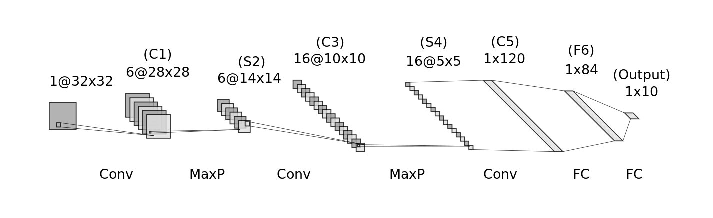
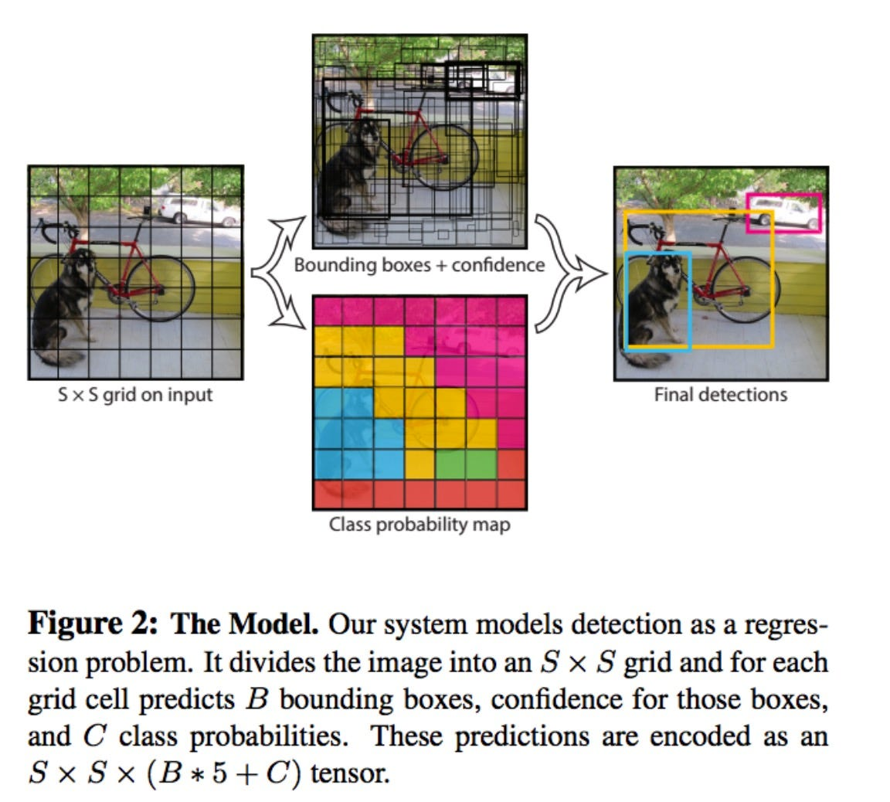

History of Neural Network Architectures
LeNet (1998)
The original LeNet paper, titled "Gradient-Based Learning Applied to Document Recognition" (LeCun et al., 1998), introduced the LeNet architecture as a pioneering work in the field of deep learning. It demonstrated the effectiveness of convolutional neural networks (CNNs) in image recognition tasks, particularly in the context of handwritten digit recognition.
LeNet architecture
 Along with the architecture, the MNIST dataset was released, consisting of grayscale 28x28px 0-9 digit images. It has now become a toy dataset for beginners who start their journey with machine learning.
AlexNet (2012)
AlexNet is a deep neural network architecture that was introduced in 2012 by Alex Krizhevsky, Ilya Sutskever, and Geoffrey Hinton. It was a groundbreaking model that won the ImageNet Large Scale Visual Recognition Challenge (ILSVRC) in 2012, achieving a top-5 error rate of 15.3% on the ImageNet dataset.
Key features of AlexNet:
- Deep architecture: AlexNet was one of the first deep neural networks to gain widespread attention. It consisted of 5 convolutional layers, followed by 3 fully connected layers.
- ReLU activation: AlexNet used the rectified linear unit (ReLU) activation function, which was a departure from the traditional sigmoid and tanh activation functions used in earlier neural networks.
- Local response normalization: AlexNet used local response normalization (LRN) to normalize the activations of each neuron based on the activities of its neighbors.
- Dropout: AlexNet used dropout to prevent overfitting by randomly dropping out neurons during training.
- Data augmentation: AlexNet used data augmentation techniques such as random cropping, flipping, and color jittering to artificially increase the size of the training dataset.
- Training on a GPU: It was one of the first models trained on GPUs, which greatly accelerated training and made it more popular in deep learning.
VGG (2014)
VGG (Visual Geometry Group) is a convolutional neural network architecture developed by Karen Simonyan and Andrew Zisserman from the University of Oxford in 2014. It was a significant improvement over AlexNet and achieved excellent performance in the ILSVRC 2014 competition.
Key features of VGG:
- Simplicity: VGG used a very simple and uniform architecture, with only 3x3 convolutional layers stacked on top of each other, increasing depth.
- Depth: VGG demonstrated that network depth is crucial for good performance. The most common variants are VGG16 and VGG19, with 16 and 19 layers respectively.
- Small filters: VGG used small 3x3 filters throughout the network, which allowed for more non-linear transformations and fewer parameters.
- Max pooling: 2x2 max pooling was used to reduce spatial dimensions.
- Large number of parameters: Despite its simplicity, VGG had a large number of parameters (138 million for VGG16), which made it computationally expensive.
ResNet (2015)
ResNet (Residual Network) was introduced by Kaiming He et al. in their 2015 paper "Deep Residual Learning for Image Recognition". Its key innovation was showing that extremely deep networks could be trained effectively using residual learning. This allowed for the creation of much deeper networks than were previously feasible, leading to significant improvements in performance on various computer vision tasks.

Key features of ResNet:
- Residual learning: The core idea of ResNet is the introduction of "skip connections" or "shortcut connections" that enable the network to learn only what to "add" to the input data. This allows for better gradient flow, as it provides a highway for gradients to flow uninterrupted to the last layers.
- Deep architecture: Residual connections allowed for much deeper networks than previous architectures. Common variants include ResNet-50, ResNet-101, and ResNet-152.
YOLO (2015-present)
YOLO (You Only Look Once) is a series of real-time object detection systems introduced by Joseph Redmon et al. in 2015. Unlike previous object detection methods that relied on region proposal networks or sliding windows, YOLO frames object detection as a single regression problem, enabling end-to-end training and real-time performance.
How it works:
 YOLO divides an image into a grid of cells. Each cell is responsible for detecting objects whose center falls within it. YOLO predicts bounding boxes and class probabilities for each grid cell, allowing it to detect multiple objects simultaneously. The algorithm uses anchor boxes to handle different aspect ratios and sizes of objects. During inference, YOLO applies Non-Max Suppression to remove redundant bounding boxes and keep only the best ones based on probability scores and Intersection Over Union (IOU) thresholds. This approach enables YOLO to achieve high-speed object detection while maintaining good accuracy.
ViT (2020)
The Vision Transformer (ViT) model, introduced in the paper "An Image is Worth 16x16 Words: Transformers for Image Recognition at Scale" by Alexey Dosovitskiy, Lucas Beyer, Alexander Kolesnikov, et al., aimed to explore the applicability of the Transformer architecture, which has been highly successful in natural language processing (NLP), to computer vision tasks. The motivation behind the paper was to determine the extent to which the standard Transformer encoder could be used for image recognition tasks with minimal modifications.
To adapt the Transformer architecture to computer vision, the authors modified only the tokenization part. Instead of using token embeddings as in NLP, they divided images into fixed-size patches, flattened them into vectors, and treated them as token embeddings. This allowed the Transformer to process visual data in a similar manner to how it processes textual data.
Although the Vision Transformer (ViT) is less data-efficient compared to convolutional neural networks (CNNs), it has higher capacity due to fewer prior assumptions about the structure of the data, meaning that ViT requires more data to train effectively but has the potential to capture more complex patterns and relationships in the data.

Generative AI
GAN (Generative Adversarial Networks)
A Generative Adversarial Network (GAN) consists of two neural networks that train together: the Generator and the Discriminator. The Generator creates fake images, while the Discriminator tries to distinguish between real images (from the dataset) and fake ones (generated by the Generator).
The Generator starts with random noise and tries to create images that look increasingly realistic. The Discriminator is trained to detect whether an image is real or fake by outputting a probability (how likely the image is fake). During training, these two networks are in competition: the Generator’s goal is to fool the Discriminator, and the Discriminator’s goal is to get better at identifying fake images. This competition helps both networks improve over time.
The balance between the Generator and Discriminator is crucial. If one becomes too strong, the other can’t improve, causing training instability. However, if both improve at a similar pace, the Generator can eventually create very realistic images.
Once the training is complete, only the Generator is kept because it can now produce realistic images from random noise. The Discriminator is no longer needed.

Diffusion (Denoising Probabilistic Models [DDPM], Stable Diffusion, and Others)
Diffusion models generate images by progressively removing noise from an image until it becomes clear. Training involves two phases:
Forward Diffusion:
This step adds increasing amounts of random noise to a dataset image, gradually transforming it into pure noise. It is responsible for generating data for the backward process.
Backward Diffusion:
The neural network is trained to reverse this process, learning how to remove the noise step by step, eventually reconstructing the original image. Originally (in the DDPM paper), the model learns what noise was added and predicts this noise, which is later removed and passed back to the model (at inference time; during training, the model doesn’t learn on its own outputs).
The goal is for the model to learn how to effectively denoise, transforming noisy data back into recognizable images. A trained model can generate images from random noise (which is indistinguishable from a clear image with a huge amount of noise added). In more technical terms, the model learns to map a simple distribution (like Gaussian noise) to the complex distribution of real images. Since the noise added and removed at each step follows a Gaussian distribution, the overall transition between these distributions is also Gaussian (which is mathematically well understood).
Key Differences between GANs and Diffusion Models:
The key difference between GANs and Diffusion models is that GANs attempt to map noise to an image in one step, which makes training harder and less stable. Diffusion, on the other hand, splits this process into many steps, making the learning task easier. The downside, however, is the speed of generating images, which can be up to 1000x slower (though usually about 10-50x slower).